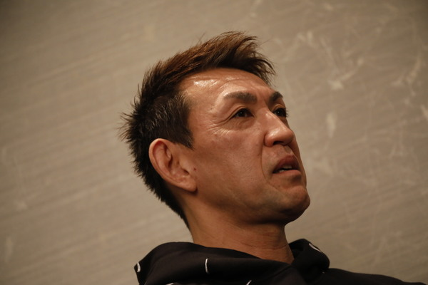
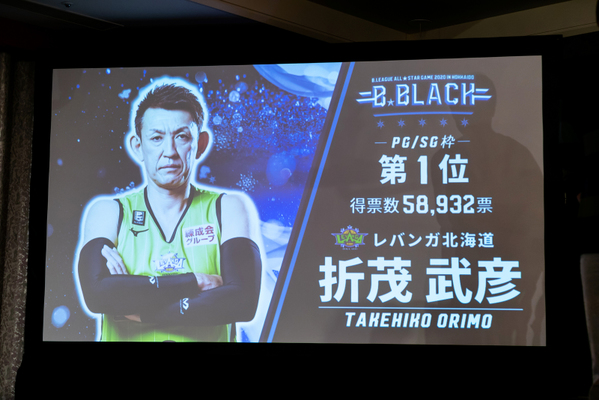
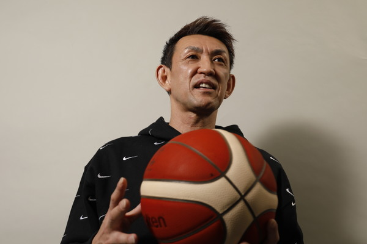
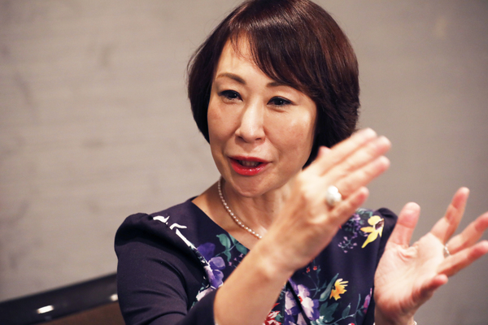
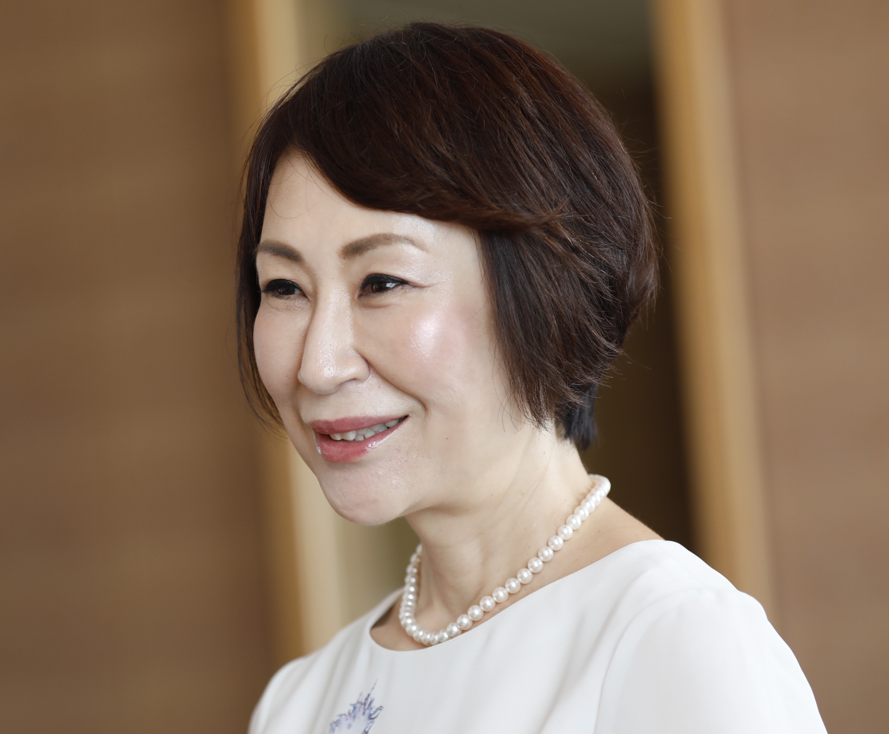
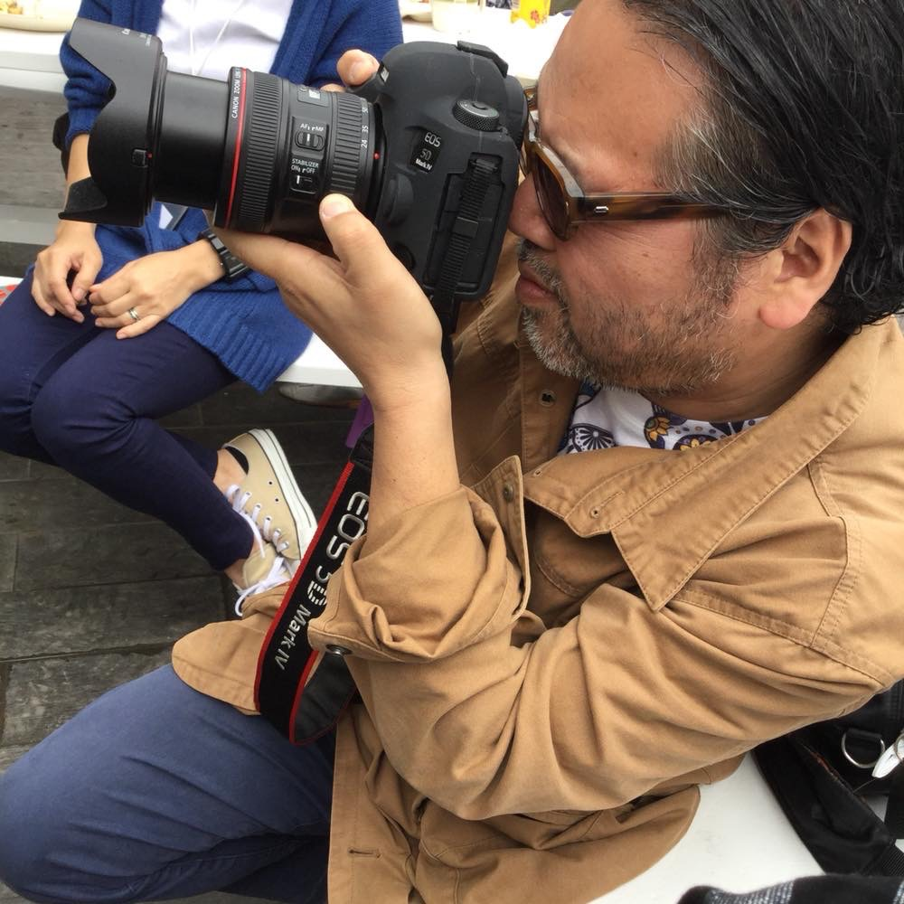

第1回 プロ12年目の決断
Bリーグ初のオールスターに選ばれて
小松：
今回は日本男子プロバスケットボール界のレジェンド、折茂武彦さんにお話をおうかがいしたいと思います。
折茂さんは、1993年にトヨタ自動車に入社され、14年間在籍された後、2007年に当時日本で唯一のプロチームでのプレーを望みレ
ラカムイ北海道に移籍、ホームゲーム会場はリーグ屈指の観客動員を誇り、地元の方々の熱狂的な支持を受けます。
そして2011年、レラカムイがリーグ除名処分を受けた後は、自ら立ち上げたレバンガ北海道の代表兼選手という異例のポジションで
バスケ界を牽引されてきました。
そして2019年9月、選手としての現役活動を引退する発表をされて･･････。
私は折茂選手のプレーを応援してきた者の一人として、2019年10月1日の引退会見をとても感慨深く拝見しました。折茂さんご自身
は、引退を告げる会見にどのような気持ちで臨みましたか。
折茂：
やっと責任を果たせたかな、という思いが強かったですね。レバンガ北海道にも新しく4人の選手が加わりましたし、色々な面でチ
ームが新たなステージに立ったんだという気持ちになったんです。八村塁選手や渡邊雄太選手などNBAでキャリアをスタートする選
手が日本から誕生する時代を迎え、自分の役割は果たせたのかな、と。シーズンが終わってから引退を発表しても良かったのです
が、北海道で応援してくださる方々が沢山いて、多くのファンの方に支えられてここまできていますから、今シーズンが始まる前に
引退のことを伝えた方がいいと思い、あのような会見をさせて頂いたんです。
小松：
今年50歳を迎える折茂さんですが、体力も気力も充分です。まだまだやれる、と現役続行を望んだファンも多いと思います。
折茂：
ありがとうございます。確かに、49歳という年齢が引退の理由ではありません。もちろん、20代の選手と同じというわけにはいきま
せんが、若手と同じトレーニング量をこなしていましたし、シーズンを戦い抜く気合もあります。年齢的な衰えは経験やプレーの質
でカバーすることができていたと思います。引退の決め手は体力の限界などではないんです。一番は、時代の移り変わりです。ワー
ルドカップに出場した日本代表のゲームをテレビで観戦しながら、子どもたちに夢や希望を与える選手がこんなにたくさん出てきた
ことに感激していました。だからこそ、レバンガ北海道も変わらないといけない時期に来ていると、実感したんです。僕自身、自分
の心にけじめを付けられる時をようやく迎えられたんですよ。

小松：
2020年1月18日に札幌の北海きたえーるで開催される「B.LEAGUE ALL-STAR GAME 2020 IN HOKKAIDO」のメンバーにも選
出されましたね。おめでとうございます。
折茂：
私は、Bリーグになってからオールスターに選ばれたことがなかったんです。Bリーグ開幕以降、3ポイントコンテストに“飛び入り
参加”した経験はあるものの、オールスターゲームへ出場するのは初めてなんです。Bリーグになる前のオールスターには何度か出場
したことがあるのですが、プロのオールスターというのは、やはり大きな違いがありますね。メディアの方々の注目度も違います
し、改めてああいう場に立たせていただいて、日本のBリーグやバスケット界がさらに良い方向に進んでいると感じました。私自
身、Bリーグでは最初で最後のオールスターとなりますが、豪華なメンバーと一緒にプレーできることを心から楽しみたいなと思っ
ています。
小松：
レバンガ北海道のホームタウンである北海道で開催されることに、地元ファンは熱狂しているでしょうね。
折茂：
子どもたちにとって夢を与える、勇気を与える最高の機会だと思っていますので、素晴らしいゲームになるよう全力を尽くしたいで
す。最高のメンバーが北海道に集ってくれること、そこでともにゲームを戦えること、すべてに感謝しています。
小松：
58,932票を獲得し、B.BLACKの「PG/SG枠」でファン投票1位を飾りました。これは本当に凄い。素晴らしいです。

折茂：
はい、投票してくださった皆さんに感謝しかありません。全国のファンの皆様にも本当に感謝しているのですが、特に北海道のバス
ケファン、レバンガ北海道のファンには改めて「ありがとうございます」と伝えたいですね。北海道は、掛け替えのない場所です。
私は北海道へ渡って12年になりますが、バスケットボール文化が真に根づきはじめていると感じていますし、そんな中でオールスタ
ーが開催されることは、レバンガ北海道にとっても、私自身にとっても非常にいいタイミングだと思っています。
小松：
折茂さんがバスケットボールやレバンガ北海道に捧げてきた情熱、ご苦労が結実しましたね。これは脚本家でも書けないドラマティ
ックなストーリーですね。
折茂：
自分で言うのも恥ずかしいのですが、私の人生は本当に映画やドラマのようです。波乱万丈だなと思います。本当に厳しい時期もあ
ったのですが、運も良く、ようやくこういうふうになれたな、と改めて感慨深く思っています。多くの方々に支えられた結果です。
小松：
今、これだけ日本のバスケットに注目が集まり、素晴らしい選手が次々と登場して、明らかに時代が旋回し新たな時代へと突入して
います。
折茂：
今日の日本のバスケットボール界は、私が若い頃に夢としていた世界に近づいていて、自分が理想としていた環境や状況になってき
ていて、そういう面では一人のバスケットボール人として心から嬉しく思います。私の若い頃の日本のバスケットボールは、やはり
企業スポーツという枠の中でやっていた部分がありますから、人々を楽しませるエンターテインメントではあり得なかった。いつど
こで、どんな試合がやっているのか、一般の方々にはわからない、そんな時代でした。「ねえ、バスケ観に行こうよ」と気軽に観に
行ける空気は微塵もありませんでした。それでもようやく日本にもプロバスケの時代が訪れました。選手として、レバンガ北海道の
代表として、携われたことが本当に嬉しいです。
これからの日本バスケットボール
小松：
Bリーグが2016-17シーズンからスタートし、2019年には21年ぶりにワールドカップへの自力出場を果たしました。そして今年
2020年は、東京オリンピックに開催国枠で出場します。プロリーグの影響はこんなにも大きいのですね。
折茂：
その通りですね。プロ選手として活躍する場所があるということが選手の可能性を導き広げていますし、日本人選手がNBAというバ
スケットボールの頂点とも言える場所へも駆け出していけることを八村選手や渡邊選手が証明してくれました。
小松：
選手とレバンガ北海道代表というパラレルワークを長年続けてきた折茂さんは、2020年を機に、選手の育成、地域での組織化など、
バスケットボール界全体のことを考えはじめているのでしょうか。
折茂：
そうですね。レバンガ北海道がこれからもっと強いチームになっていくには、クラブ運営にもより力をいれないといけません。私自
身は、今までバスケットボールに生かしてもらってきましたから、バスケットボール界のために何ができるだろう、ということを考
えています。バスケットボールが盛り上がっていて、子どもたちが目指す目標の一つになりはじめているので、プロバスケットボー
ル選手になりたいと思っている子どもたちに、少しでもサポートができればいいな、とも思っています。そして「日本代表」です
ね。日本代表をもっと強くする一助として、私に何ができるか、そうしたことも考えていきたいです。
小松：
レバンガ北海道からアカツキファイブヘ。素敵ですね。
折茂：
はい、これから、八村選手や渡邊選手のような、世界で活躍できる選手がどんどん北海道からも出ていくことで、北海道のバスケッ
トボールがさらに盛り上がり、北海道全体の熱を上げていけたら、本当に嬉しいですね。
小松：
地域に根ざした子どもたち向けのバスケットボールの組織なども必要になってくるでしょうか。
折茂：
間違いなく必要になるでしょう。Bリーグでもジュニアやユースのクラスの指導に力を入れていますし、そこから日本代表選手にな
れる選手が輩出される環境になってきています。私は、長い経験を活かし（笑）、北海道、そして日本のバスケットボールを、プレ
ーする選手にとっても、客席で観戦するファンにとっても、もっともっと魅力あるものにしていきたい。今シーズンが終わったら、
頭を切り換え、そのことを考えたいと思います。

引退、そしてこれから
小松：
野球では山本昌選手、サッカーでは三浦知良選手に代表されますが、40代、50代でも現役でいられるアスリートはいます。折茂さん
も同じですが、同時に、プレイヤーとしてのステージを降り、だからこそできる役割があると思われたのですね。
折茂：
そうなんです。引退を決めたのは、これから注力する部分は選手としてのものでなく、バスケットボールという競技全体のためであ
るべきだ、そこに力を注ぐのが自分の責任ではないか、と思ったからなんです。これまでは、私がコートに立って若い選手とともに
プレーすることで、若い選手が学べる部分もあるだろうと思っていたのですが、日本のバスケ界を取り巻く環境が変化を遂げて、こ
れからは違った側面で日本のバスケットボール界のために働きたいな、と考えました。
小松：
2018-19シーズン、レバンガ北海道は1部リーグに残留するための苦しい戦いが続きましたね。ファンの皆さんも絶叫しながらハラ
ハラしていたと思うのですが、残留を決めた試合を観ながら、レバンガ北海道の戦いは素晴らしく、こうした経験こそがチームを強
くしていくのだな、と思っていました。折茂さんの引退も、自分がいなくても力強く進んで行くチームを想像できたからではないで
すか。
折茂：
その通りです。2018-19シーズンは、あれだけ苦しい思いをしましたが、チームが一丸となってなんとか1部に残留することができ
ました。だからこそ、チームが生まれ変わる時期にきている、とはっきり認識できたんです。これまで、自分で立ち上げたクラブで
ずっとやってきて、ありがたいことに「北海道のバスケットボール」の象徴のような役割を勤めさせて頂いたのですが、これから
は、自分が得た経験や価値観を次の世代に受け継いでいくことが、バスケ人としての勤めだと思えたんです。だからこそ、折茂武彦
という選手が、前時代を連れて去ろう、と。来シーズンからは、折茂というベテランなしでレバンガ北海道というチームはやってい
かないといけません。それこそが新たなスタートなのです。
小松：
選手生活の最後の年がスタートする前に引退を宣言して、シーズンに入る、つまり2020年というのは、折茂さんにとって記念すべき
年になりますが、改めて考えてふと寂しくなったりしませんか？
折茂：
実はまだ実感が湧いていないんですよ。というのも、このバスケットボールというスポーツを私はずっとやってきまして、この競技
以外に従事したことがありませんから。辞めたらその後、どんな生活が待っているのか、想像がつきません（笑）。 もしかすると、
「辞めどきを間違えたかな」「まだやりたかったな」というような、色々な思いが沸き起こるかも知れませんね。でも、それも経験
ですね。そうやって、だんだんと現役生活から離れて行くのだと思います。
小松：
選手生活と同時に、会社の代表としての仕事をパラレルでやってこられたわけですが、ついに選手としてコートに立たない毎日が訪
れます。
折茂：
ええ、今シーズンが終われば私はOBです。私の人生があとどれくらい残っているのかわかりませんが（笑）、次のステップにこのタ
イミングで行くからには、次の仕事もやり遂げたいと思っています。それがクラブ経営者なのか、または違う道を探すのか、それは
今はまだどうなるかわかりませんが、引退して、少し時間をいただいて、しっかり考えたいと思っています。
小松：
先のことを考えるより、今シーズンは選手としての使命を全うする、ですね。

折茂：
もちろんです。実は、私は引退したらその後何をするのかを聞かれるのが、あまり好きではなかったんですよ（笑）。現役の選手で
ある以上は、先のことを考えた時点でなんとなく気持ちがマイナスの方向を向いてしまうような気がしていて。なので、この先の人
生の進路は、選手生活を全うしてから決めていこうと思っています。
小松：
個人的には、レバンガ北海道の代表としてその手腕を振るっていただきたいですが、折茂さんなら、バスケットボール界を沸かせる
色々なアイデアが湧いてくるかもしれませんね。ユニフォームを脱ぐと、時間のシフトが全く変わりますから。本当に楽しみです。
さて次回は、折茂さんの幼少期、学生時代のお話をお聞かせください。よろしくお願いします。
折茂：
こちらこそ、よろしくお願いします。
（つづく）
第2回はこちら
小松成美

プロフィール
神奈川県横浜市生まれ。広告代理店、放送局勤務などを経たのち、作家に転身。
生涯を賭けて情熱を注ぐ「使命ある仕事」と信じ、1990年より本格的な執筆活動を開始する。
真摯な取材、磨き抜かれた文章には定評があり、数多くの人物ルポルタージュ、スポーツノンフィクション、インタビュー、エッセ
イ・コラム、小説を執筆。
主な作品に、『アストリット・キルヒヘア ビートルズが愛した女』『中田語録』『中田英寿 鼓動』『中田英寿 誇り』『イチロ
ー・オン・イチロー』『和を継ぐものたち』『トップアスリート』『勘三郎、荒ぶる』『YOSHIKI/佳樹』『なぜあの時あきらめな
かったのか』『横綱白鵬 試練の山を越えてはるかなる頂へ』『全身女優 森光子』『仁左衛門恋し』『熱狂宣言』『五郎丸日記』
『それってキセキ GReeeeNの物語』『虹色のチョーク』などがある。最新刊、浜崎あゆみのデビューと秘められた恋を描いた小説
『M 愛すべき人がいて』はベストセラーとなっている。
現在では、執筆活動をはじめ、テレビ番組でのコメンテーターや講演など多岐にわたり活躍中。
福岡耕造

プロフィール
写真家、映像作家
人物撮影を中心に広告、出版他多くの媒体で活動する。
撮影対照はアスリート、タレント、音楽家、政治家、市井の人々など多岐にわたる。
代表作品は「島の美容室」(ボーダー・インク)、「ビートルズへの旅」リリーフランキー共著/新潮社)など。
撮影 : 福岡耕造
演出.編集 : 福岡耕造
アート・デレクション : mosh
音楽 : 「Room73 」波・エネルギー